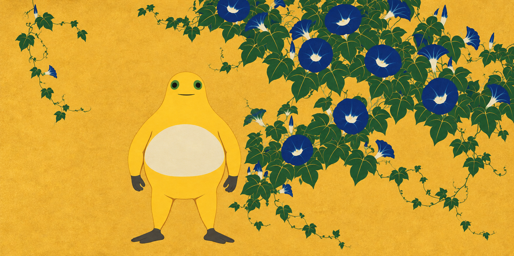
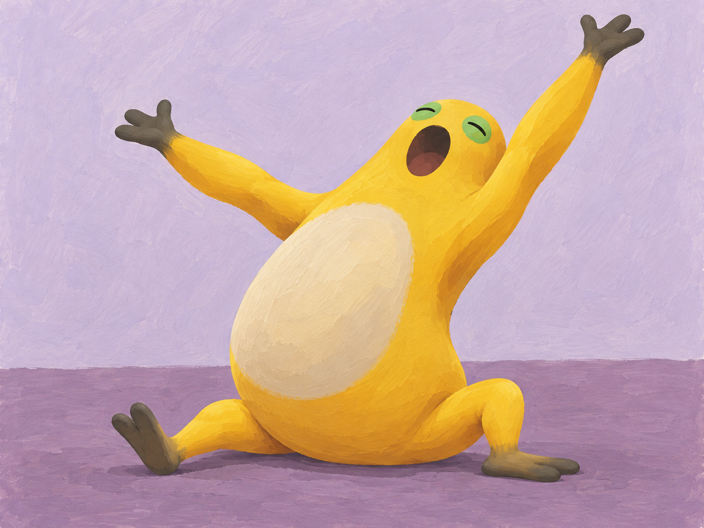

← 创作手记2026-10-29 · 画面里的问题与取舍
按留存作品与创作记录整理的阶段手记；原图日期沿用实际创作日，入馆时间另列，不把本次整理称为当天新增创作或全天总结。研究与淘汰图不作成品展示。
收据铺成了一条路
机器只吐出一张纸，却让房间多了两道转弯。开头几条短线很快停下，剩下的白一路铺到奶蛙脚前。它没有伸手，长长的纸也没有给出下一步。
收据铺成了一条路 · V1 · 采用的定稿版本；具体来源与权利另列。藤蔓留着不同宽度的空处
右边的花叶挤近手臂，只留一条窄窄的金缝；左边却空得足够让视线停下来。黄色身体与花叶一起成为色面，藤蔓没有把它围住，疏密之间仍有出口。

藤蔓留着不同宽度的空处 · V2 · 采用的定稿版本；具体来源与权利另列。笑得折了一下
背弯成一整道弧，双臂抱住肚子，两膝跟着折下去，后脚跟也离了地。笑意不只停在脸上，而是把整副身体带向前方，像忽然撑不住的一个停顿。
笑得折了一下 · V1 · 采用的定稿版本；具体来源与权利另列。把自己慢慢撑开
屁股压在地上，腹面斜着拉长，两条手臂向不同高度展开。一腿伸直，一腿屈起，身体在松开与支撑之间慢慢展开，伸懒腰有了不对称的形状。

把自己慢慢撑开 · V1 · 采用的定稿版本；具体来源与权利另列。来源与权利
本项目的AI辅助二维创作，不代表官方奶龙、参考艺术家或收藏机构。奶蛙为社区衍生形象；角色与参考作品权利归各自权利人。本馆不授予第三方内容开放许可，参考原图仅提供来源链接。